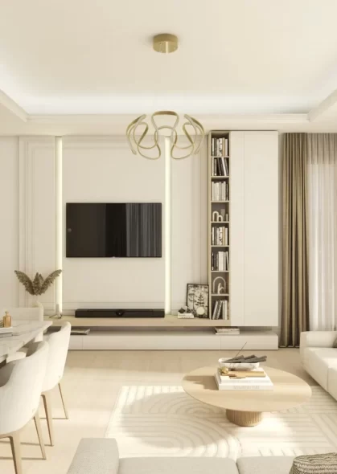

PROJECT OVERVIEW
The Almond Garden Acıbadem
A two-block residential project in Acıbadem with apartments, lofts, duplexes and terrace or garden options. Landscaped outdoor spaces connect the homes with a greener setting within the city.
Blocks2
Published homes148
Home options1+1 – 4+1
Photo gallery

Official architectural illustrations; these images do not show the current construction condition.
EVERYDAY LIVING
Living spaces
The project presentation includes indoor and outdoor pools, a gym, sauna, indoor parking, garden areas and walking paths.
LOCATION AND ACCESS
Acıbadem · Üsküdar · Istanbul
Derem Sokak No:9, Üsküdar. The official presentation identifies Ünalan Metro and Uzunçayır Metrobus among the nearby transport connections.
YOUR NEXT STEP
Choose your home
Request the current apartment selection, price and payment options. Compare the exact unit, view and included services before arranging your purchase.